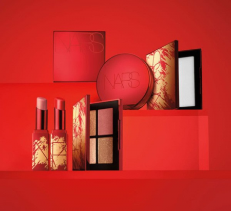
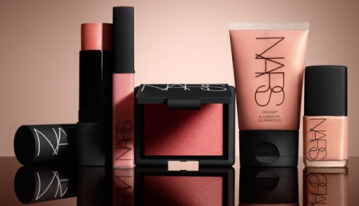
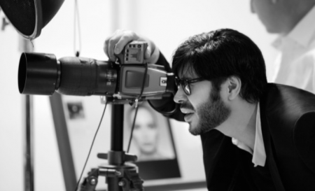
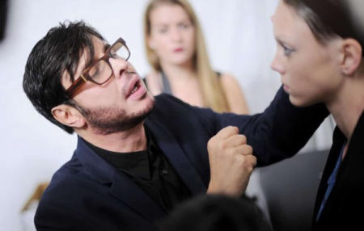
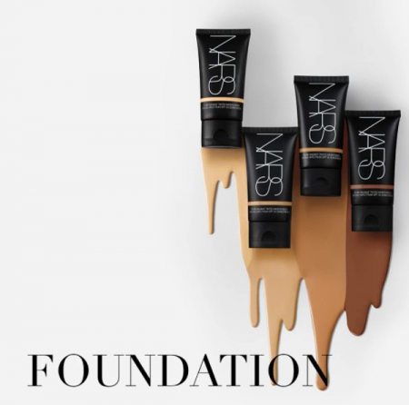
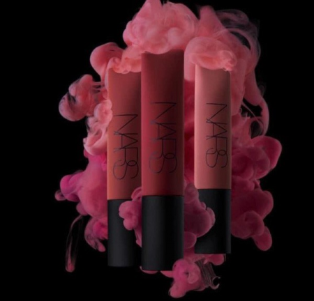

Chặng đường phát triển của thương hiệu nars qua từng thời kỳ

Thương hiệu Nars: Lịch sử hình thành và phát triển qua các năm lịch sử
Thương hiệu Nars do ai là người sáng lập

François Nars sinh ra ở Tarbes, miền Nam nước Pháp và lớn lên chịu ảnh hưởng từ mẹ Claudette và bộ sưu tập quần áo hàng hiệu của bà. Bà mẹ cũng giúp ông có được công việc đầu tiên với tư cách là trợ lý cho một số nghệ sĩ trang điểm hàng đầu của Paris.
Sau khi tốt nghiệp trường Carita Makeup ở Paris, Nars chuyển đến New York vào năm 1984 và được biết đến là người yêu màu sắc và phong cách hiện đại. Ông cũng đã làm việc với nhiếp ảnh gia Steven Meisel và nhà tạo mẫu tóc Oribe Canales. Trong những năm 80 và 90, họ đã thực hiện nhiều bài xã luận trên tạp chí xuất hiện trên tạp chí Vogue Mỹ, Vogue Italia và Elle
Năm 1994, Nars cho ra đời Mỹ phẩm NARS. Mặc dù công ty đã được bán cho Shiseido vào năm 2000, Nars vẫn là giám đốc nghệ thuật, nhiếp ảnh gia nội bộ và người viết quảng cáo cho thương hiệu của mình.
Cuộc cách mạng làm đẹp 25 năm của François Nars

Với tầm nhìn độc đáo, cùng với con mắt nghệ thuật vốn có, François Nars đã bắt đầu mở rộng con đường nghệ thuật sáng tạo của mình bằng cách nghiên cứu nhiếp ảnh và thời trang. Ông thể hiện tư duy thẩm mỹ độc đáo và đầy táo bạo. Chất riêng của ông không hề trùng lặp và tìm thấy ở bất cứ nhà thiết kế nào.
Phong cách và tư duy độc đáo của ông được nhìn nhận toàn cầu và các tác phẩm với tư cách nhiếp ảnh gia của ông xuất hiện trên các tạp chí Vogue Mỹ, Harper’s Bazaar, Vogue Ý, Vanity Fair và Marie Claire… François cũng chính là người thực hiện tất cả hình ảnh các chiến dịch quảng bá của NARS với cách tiếp cận độc đáo như triết lý trang điểm của ông.
New York - Nơi khởi đầu của hơn hai thập kỷ phá vỡ mọi nguyên tắc

Ông nhìn ra được điểm hạn chế của các đàn anh trước đó, ận tâm và cầu toàn, chính khao khát vươn tới cái đẹp luôn cháy trong trái tim người nghệ sĩ đã đưa François tới BST đầu tiên. Tháng 11 năm 1994, 12 thỏi son NARS đầu tiên đã được ra mắt tại Barneys, New York với 12 gam màu thách thức mọi quy chuẩn làm đẹp đương thời.
Thành tự gặt gái sau 25 năm tạo ra bản sắc riêng của mỗi người phụ nữ

Là nghệ sĩ trang điểm, nhiếp ảnh gia và lúc này đã trở thành nhà sáng lập NARS Cosmetics, François tự thực hiện tất cả các chiến dịch quảng cáo của thương hiệu từ năm 1996 đến nay
Phải nói, đây là lần đầu tiên trong lịch sử làm đẹp có một nhân vật như ông, trong tất cả các sản phẩm từ màu sắc, tên gọi đều là do ông nghiên cứu và gọi tên.
Và qua đó, François thể hiện sự trân trọng và ưu ái vô bờ với phái đẹp. Tất cả những cuốn sách ảnh và cẩm nang làm đẹp của ông từ năm 1999 đều lấy phụ nữ làm trọng tâm.
Con đường mà François Nars đến với son môi như thế nào?

Sáng tạo ra những thỏi son môi như một cách để cổ vũ cho người phụ nữ hãy yêu thương chính bản thân mình, phá bỏ mọi ràng buộc của xã hội.
Thực sự, tâm huyết nghiên cứu của ông đã được đền đáp vô cùng xứng đáng, trải qua 25 năm tính đến thời điểm hiện tại NARS đã mang tới tổng cộng 72 màu son đa dạng từ màu sắc đến kết cấu, tất cả đều phục vụ cho việc thể hiện cái tôi và cá tính riêng trong mỗi người phụ nữ trên khắp thế giới. Đó cũng là lý do má hồng Orgasm kinh điển được tạo nên vào năm 1999, dòng chăm sóc da hoàn chỉnh NARSskin xuất hiện vào 2002 và nhiều sản phẩm khác ra đời theo các năm cho dòng mỹ phẩm trang điểm hoàn chỉnh với hơn 600 sản phẩm
Định hướng phát triển trong tương lai của thương hiệu Nars
Để gói gọn phẩm chất và những cống hiến của ông cho ngành làm đẹp, có lẽ phải trích lời minh tinh nước Ý, Issabella Rossilini: “François không chỉ cực kỳ tài năng mà còn cực kỳ thú vị! Cách trang điểm của anh ấy không đơn thuần khiến phụ nữ đẹp hơn mà còn là hiện thân đầy đủ của nghệ thuật, lịch sử, những biểu tượng từ quá khứ và mộng tưởng về tương lai. Mỹ phẩm NARS vì vậy mà cũng phản ánh sự lém lỉnh, duyên dáng và tinh tế”.
Lời kết
Hiện tại, Thương hiệu Nars đã trở thành một đế chế mỹ phẩm làm đẹp nổi tiếng trên toàn thế giới, trải qua nhiều năm phát triển thương hiệu đang dần lớn mạnh và có chỗ đứng chắc chắn trong lòng tín đồ làm đẹp.
Không ai có thể chắc chắn tương lai thương hiệu Nars sẽ như thế nào, tuy nhiên nhìn lại lịch sử hình thành và phát triển đã đóng góp cho thị trường làm đẹp thì quả thực rất đáng khen ngợi và tự hào đúng không nào?
Nếu Quý khách đang muốn mua cho mình những bất cứ sản phẩm nào của hãng Nars đừng quên ghé Cửa Hàng Làm Đẹp để được mua hàng hiệu chính hãng với giá tốt nhất.
Liên Hệ
Thông tin báo chí, vui lòng liên hệ:
Bà Lưu Hạnh
Trưởng phòng truyền thông
Công ty Lazada Việt Nam
Ông Vũ Nguyên Quân
Phòng Truyền thông
Công ty Lazada Việt Nam